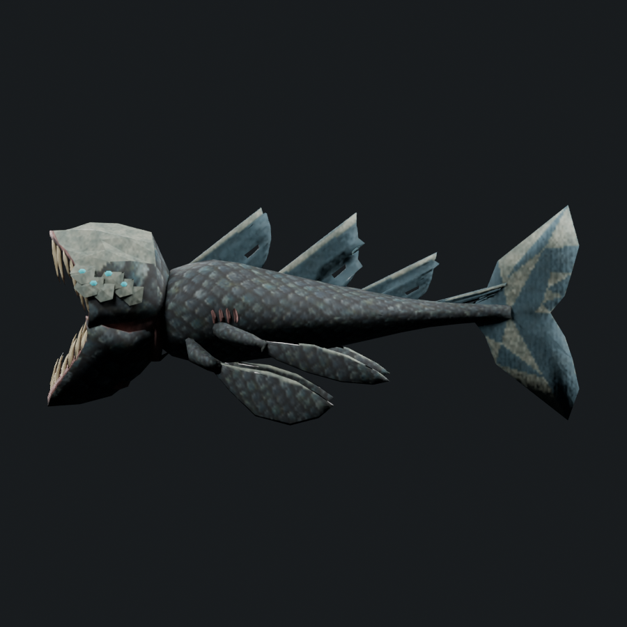
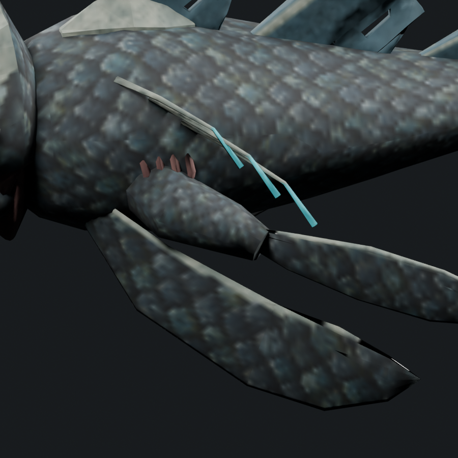
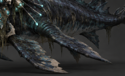
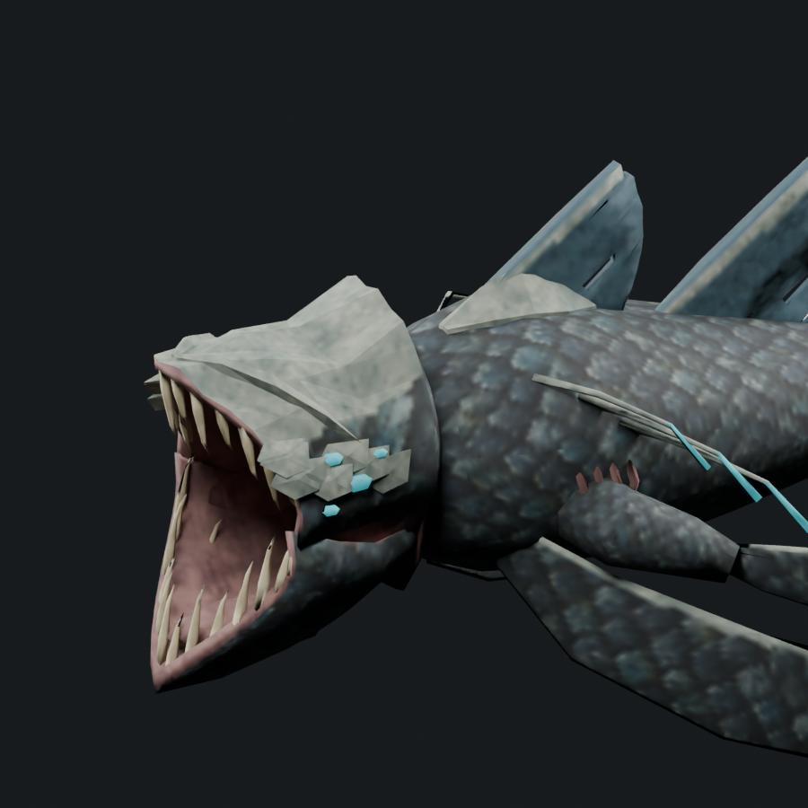
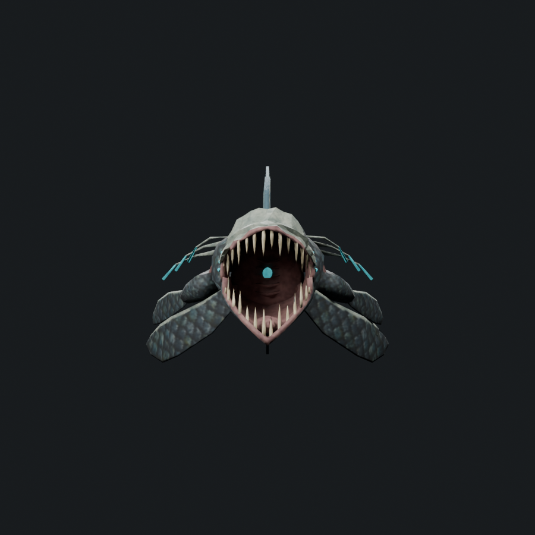
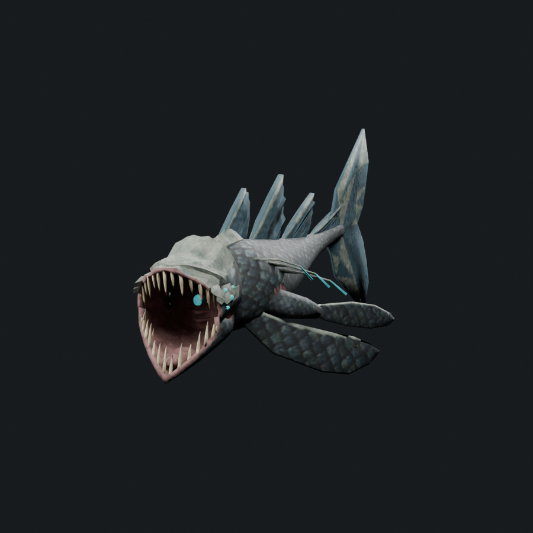

The forward fin attaches directly to the torso: no shoulder and no short arm. Only the middle fin retains a thick tapered muscular member. The head is narrower and shorter, with the upper jaw compressed toward the body skyline and the open lower jaw beneath it. Fang shafts are straighter in front view; the cheek organs form an uneven cluster. Low armor ridges travel from snout toward the cheek plates, with a separate body crown near the first dorsal fin. Three curved feelers per side sweep back from the crown and have luminous ends.
6,926 triangles · 1.422× Serpent · soft cap 7,308. One mesh/material, four 512px atlas maps. 123 attachment records pass 65 sampled poses across 13 retained actions. This is an art study requiring visual review; offline checks do not establish native performance or donor-level visual acceptance.







Editable model · Skinned export · Recorded changes · Geometry checks · Attachment checks